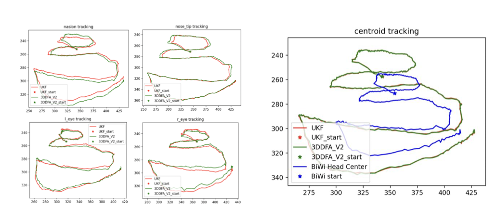

4 stable landmarks
The report centered tracking on the two outer eye corners, the nose tip, and the nasion for a more reliable clinical feature set.
Intelligent Motion Lab · Jan 2024–Oct 2024
The goal was not only to estimate head pose, but to make that estimate reliable enough to support real-time visual servoing on a UR5 setup with multiple cameras and endoscopes. The Spring 2024 computer vision report sharpened this work around clinical eye-exam scenarios, selective landmarks, and report-backed tracking evidence.
The report centered tracking on the two outer eye corners, the nose tip, and the nasion for a more reliable clinical feature set.
State variables covered translation, rotation, and three facial distances, while the measurements were the 2D pixel coordinates of four landmarks.
Average landmark tracking error stayed under five pixels relative to 3DDFA_V2 across the BiWi Kinect evaluation.
Report-backed pipeline
The term project made the tracking stack much more explicit: treat head pose estimation as a filtering problem with a carefully chosen feature set, not just a detector output.
Selected landmarks
The report moved away from pupil-centered tracking and instead used the outer eye corners, nose tip, and nasion as a more stable feature set under partial occlusion and clinical motion.
Tracking evidence

Engineering relevance
The report helped turn a perception idea into something more deployable: it showed where filtering genuinely stabilizes motion estimates and where the detector still breaks first.